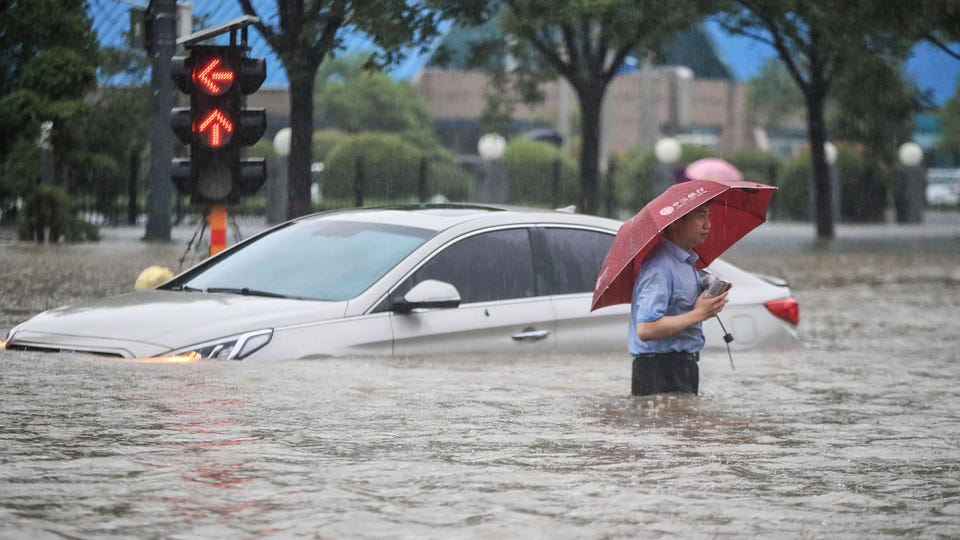
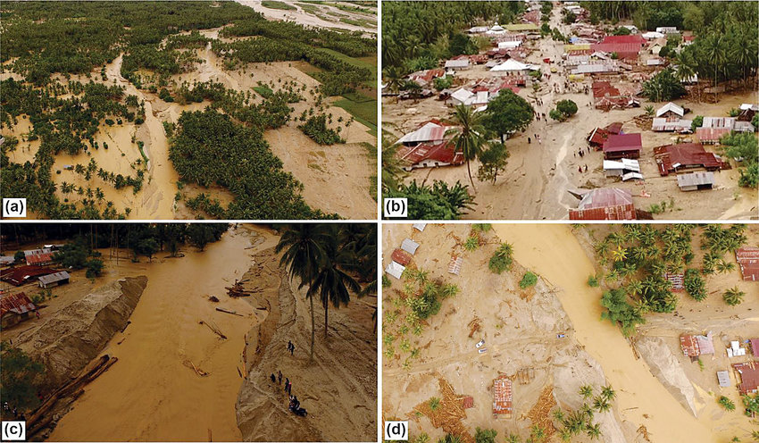
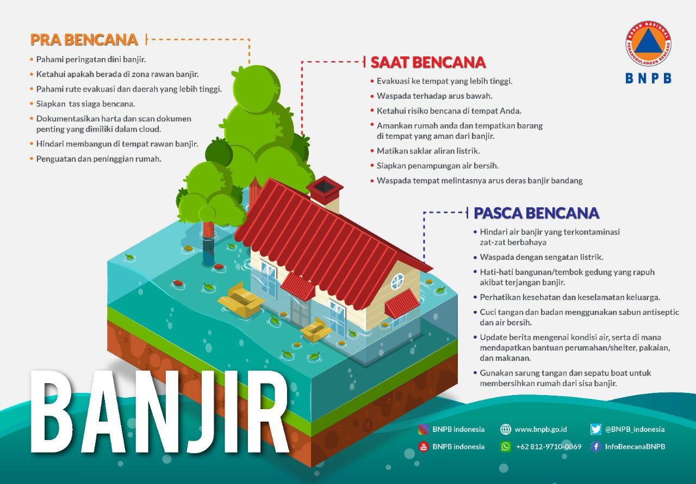

EduBan! Website Edukasi Bencana Banjir
Eduban merupakan website yang diperuntukan untuk mengedukasi masyarakat mengenai apa itu banjir, cara pencegahannya, dan mitigasi banjir ketika bencana tersebut terjadi.

Apa itu banjir?
Banjir adalah peristiwa bencana alam yang terjadi ketika aliran air yang berlebihan merendam daratan. Pengarahan banjir Uni Eropa mengartikan banjir sebagai perendaman sementara oleh air pada daratan yang biasanya tidak terendam
air. Dalam arti "air mengalir", kata ini juga dapat berarti masuknya pasang laut. Banjir diakibatkan oleh volume air di suatu badan air seperti sungai atau danau yang meluap atau melimpah dari bendungan sehingga air keluar dari
sungai itu.

Dampak Banjir
- Masalah Kesehatan
Selama banjir menggenang, akan ada banyak penyakit yang akan muncul. Bahkan, setelah air surut pun masalah kesehatan juga belum selesai.
Penyebaran wabah penyakit pada saat banjir ini umumnya rentan dialami oleh anak-anak dan kaum lanjut usia.
-
Menimbulkan Korban Jiwa
Bencana banjir juga bisa menimbulkan korban jiwa, baik karena terseret arus banjir atau karena luapan air.
Selain itu, korban jiwa juga bisa berasal dari korban banjir yang terkena penyakit seperti yang sudah Bobo jelaskan di atas.
Tak hanya itu saja, ada pula korban jiwa terjadi karena penggunaan listrik atau peralatan elektronik di rumah yang sedang kebanjiran.
-
Kesulitan Air Bersih
Meluapnya air ke permukiman membuat ketersediaan air bersih berkurang. Baik untuk minum atau untuk kebutuhan lainnya.
Biasanya, masyarakat yang terdampak banjir hanya mengandalkan air isi ulang atau subsidi bantuan air dari luar daerah banjir. Kesulitan Air Bersih
Meluapnya air ke permukiman membuat ketersediaan air bersih berkurang. Baik untuk minum atau untuk kebutuhan lainnya.
Biasanya, masyarakat yang terdampak banjir hanya mengandalkan air isi ulang atau subsidi bantuan air dari luar daerah banjir.
Mitigasi Banjir

Gambar di atas ini merupakan cara-cara mitigasi bencana banjir yang bersumber dari BNPB.